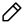
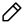

Programmation Orientée Objet
Dimanche 29 mai 2022
 https://github.com/boisgera/python-fr
https://github.com/boisgera/python-fr
 Edition
Dimanche 29 mai 2022
 https://github.com/boisgera/python-fr
https://github.com/boisgera/python-fr
 Edition
Avant de découvrir comment utiliser les objets, il est bon de se convaincre que cette compétence sera très utile en Python, car :
Tout ce qui peut être désigné par une variable est un objet !
Techniquement :
est une instance du type
object.
Le terme “instance” est à interpréter dans son sens anglo-saxon :
🇺🇸 an individual illustrative of a category
(cf. https://www.merriam-webster.com/dictionary/instance)
On pourra donc considérer qu’un type est une catégorie d’objets ; ses instances sont alors les objets qui lui appartiennent.
Entiers, booléens, chaînes de caractère, listes, sont donc des objets :
>>> isinstance(42, object)
True
>>> isinstance(True, object)
True
>>> isinstance("Hello!", object)
True
>>> isinstance([1, 2, 3], object)
True42
serait un objet, pas un entier?Mais si car les deux sont possibles simultanément ! Nous avons déjà
constaté que 42 était bien un objet :
>>> isinstance(42, object)
TrueVérifions que c’est également un entier :
>>> isinstance(42, int)
TrueDonc les deux propriétés ne sont pas contradictoires. Plus
précisément, le type de 42 est entier, pas objet :
>>> type(42) == int
Truemais comme entier est un sous-type d’objet
>>> issubclass(int, object)
Truetous les entiers sont aussi des objets : les types peuvent être des catégories imbriquées les unes dans les autres.
Bien que cela soit peut-être moins intuitif, des fonctions, des types ou des modules sont aussi des objets :
>>> isinstance(print, object)
True
>>> isinstance(int, object)
True
>>> import sys; isinstance(sys, object)
TrueLe type complex représente en Python les nombres
complexes. Il fournit un bon example des interactions qu’on peut avoir
avec des objets.
Pour créer le nombre complexe \(z = 1/2 + (3/2)i\), on peut utiliser la notation litérale pour les nombres complexes :
>>> z = 0.5 + 1.5jIl est bon de connaître cette syntaxe car c’est celle que Python utilisera pour représenter les nombres complexes :
>>> z
(0.5+1.5j)Tous les objets ne sont pas dotés d’une telle notation (dite litérale). Mais il existe une méthode alternative pour tous les objets : on peut appeler le type de l’objet que l’on souhaite instancier (comme s’il était une fonction) en lui passant les arguments nécessaires, ici partie réelle et imaginaire du nombre à construire. Le type de l’objet sert donc de constructeur.
>>> z = complex(0.5, 1.5)
>>> z == 0.5+1.5j
TrueUn objet est une structure de données. Les données qu’il contient
peuvent être rendues accessibles sous forme
d’attributs. Tous les nombres complexes possèdent ainsi
les attributs real et imag :
>>> z.real
0.5
>>> z.imag
1.5La syntaxe pour changer la valeur de l’attribut real du
nombre z devrait être z.real = .... Ici
toutefois cette affectation échoue parce que les nombres complexes ont
été conçus comme non-modifiables.
>>> z.real = -0.5
Traceback (most recent call last):
File "<stdin>", line 1, in <module>
AttributeError: readonly attributeUn nombre complexe possède un attribut conjugate dont la
nature est un peu particulière. C’est une méthode :
>>> z.conjugate # doctest: +ELLIPSIS
<built-in method conjugate of complex object at 0x...>Les méthodes se comportent comme les fonctions : elles sont appelables.
>>> callable(z.conjugate)
TrueCette méthode est liée au nombre complexe
z : elle peut utiliser z et les données qu’il
contient pour produire un résultat, sans qu’il soit nécessaire de lui
passer explicitement z comme argument. Ici,
z.conjugate() renvoie le nombre complexe conjugé de
z.
>>> z.conjugate()
(0.5-1.5j)La méthode conjugate est également disponible comme
attribut du type complex.
>>> complex.conjugate
<method 'conjugate' of 'complex' objects>Elle n’est alors par liée à une instance particulière de nombre complexe ; il faudra donc lui fournir explicitement le nombre complexe à conjuguer en argument.
>>> complex.conjugate(z)
(0.5-1.5j)Sont magiques les méthodes d’un objet dont le nom
commence et finit par un double soulignement "__". Ces
méthodes magiques sont rarement appelées directement par le programmeur,
mais le plus souvent indirectement par l’interpréteur Python
lui-même.
Les méthodes magiques du type complex permettent par
exemple de faire des calculs avec des nombres complexes avec une syntaxe
concise : s’il est possible de calculer
>>> 1j + 1j * 1j
(-1+1j)c’est que le type complex comporte les méthodes magiques
__add__ et __mul__, appelées en cas d’addition
et de multiplication respectivement. Le calcul ci-dessus est donc
équivalent à :
>>> complex.__add__(1j, complex.__mul__(1j, 1j))
(-1+1j)ou bien, en utilisant la version liée de ces méthodes :
>>> 1j.__add__(1j.__mul__(1j))
(-1+1j)Dans tous les cas, la notation initiale – où l’on laisse le soin à Python d’appeler lui-même les méthodes magiques – est sensiblement plus lisible !
Notre objectif dans cette section va être de créer un type
Complex qui va être une version simplifiée du type intégré
complex. Nous allons pour cela définir une nouvelle
classe d’objets ; pour créer une classe minimale, sans
fonctionnalité spécifique, le code ci-dessous suffit :
class Complex:
passA ce stade, il est certes possible d’instancier un “nombre complexe”
>>> z = Complex()ayant le bon type
>>> type(z) is Complex
True
>>> isinstance(z, Complex)
Truemais il n’est doté d’aucun attribut ou méthode caractéristique des nombres complexes
>>> z.real
Traceback (most recent call last):
File "<stdin>", line 1, in <module>
AttributeError: 'Complex' object has no attribute 'real'
>>> z.conjugate()
Traceback (most recent call last):
File "<stdin>", line 1, in <module>
AttributeError: 'Complex' object has no attribute 'conjugate'
>>> z + z
Traceback (most recent call last):
File "<stdin>", line 1, in <module>
TypeError: unsupported operand type(s) for +: 'Complex' and 'Complex'Pour gérer l’ajout des attributs real et
imag, on pourrait définir une fonction
def Complex_init(z, real, imag):
z.real = real
z.imag = imagqui nous permettrait de prendre un nombre complexe vide et d’y ajouter les attributs souhaités :
>>> z = Complex()
>>> Complex_init(z, 0.5, 1.5)
>>> z.real
0.5
>>> z.imag
1.5Possible oui, mais pas pratique ! En définissant directement la
fonction précédente dans la classe Complex, et en la
nommant __init__, on définit une méthode magique qui est le
constructeur associé à la classe Complex et on évite cette
construction fastidieuse.
En adoptant donc la définition suivante de Complex
class Complex:
def __init__(z, real, imag):
z.real = real
z.imag = imagon peut s’épargner la création d’un objet sans attributs, pris automatiquement en charge quand on appelle le constructeur de nombres complexes
>>> z = Complex(0.5, 1.5)
>>> z.real
0.5
>>> z.imag
1.5L’usage quand une telle méthode est définie est d’appeler
self le premier argument de la méthode, qui désignera
toujours une instance de la classe considérée
class Complex:
def __init__(self, real, imag):
self.real = real
self.imag = imagC’est uniquement une convention, qui ne change rien au comportement de la classe que nous avions définie.
L’ajout de méthodes à une classe suit le même schéma que le
constructeur. Ainsi pour avoir une méthode conjugate qui
retourne le conjugué d’une instance de nombre complexe, on peut
faire
class Complex:
def __init__(self, real, imag):
self.real = real
self.imag = imag
def conjugate(self):
return Complex(self.real, -self.imag)Avec
>>> z = Complex(0.5, 1.5)on a alors
>>> w = Complex.conjugate(z)
>>> w.real
0.5
>>> w.imag
1.5ou bien, puisque Python prend en charge automatiquement la création de méthodes liées aux instances
>>> w = z.conjugate()
>>> w.real
0.5
>>> w.imag
1.5Il est un peu frustrant de ne pas voir les nombres complexes s’afficher proprement dans le terminal à ce stade :
>>> Complex(0.5, 1.5) # doctest: +ELLIPSIS
<__main__.Complex object at 0x...>C’est un problème que nous pouvons résoudre en définissant une
méthode magique __repr__, chargée de construire une
représentation adaptée des instances sous forme de chaînes de
caractères.
class Complex:
def __init__(self, real, imag):
self.real = real
self.imag = imag
def conjugate(self):
return Complex(self.real, -self.imag)
def __repr__(self):
# ⚠️ weird output when self.imag < 0
return f"({self.real}+{self.imag}j")On a alors une représentation compatible avec la notation litérale des nombres complexes intégrés
>>> Complex(0.5, 1.5)
(0.5+1.5j)Le support des opérations arithmétiques est similaire. Pour disposer de l’addition par exemple, on peut faire :
class Complex:
def __init__(self, real, imag):
self.real = real
self.imag = imag
def conjugate(self):
return Complex(self.real, -self.imag)
def __repr__(self):
# ⚠️ weird output when self.imag < 0
return f"({self.real}+{self.imag}j")
def __add__(w, z):
return Complex(w.real+z.real, w.imag+z.imag)et alors
>>> z = Complex(0.5, 1.5)
>>> z + z.conjugate()
(1+0j)A noter que pour ce type de méthodes, qui acceptent deux instances de
la classe en argument, l’usage est d’utiliser les noms self
et other et donc de préférer la définition suivante
(équivalente) :
class Complex:
def __init__(self, real, imag):
self.real = real
self.imag = imag
def conjugate(self):
return Complex(self.real, -self.imag)
def __repr__(self):
# ⚠️ weird output when self.imag < 0
return f"({self.real}+{self.imag}j)"
def __add__(self, other):
return Complex(
self.real + other.real,
self.imag + other.imag
)Tous les attributs d’un objet n’ont pas nécessairement vocation à être publics ; on peut vouloir des données privées, à usage interne, uniquement exploitables par les méthodes propres à un objet. La convention en Python est de préfixer le nom de tels attributs par un unique caractère de soulignement.
Il est possible ensuite de contrôler au cas par cas la façon dont on autorise le monde extérieur à interagir avec ces données. Par exemple, nous pouvons faire en sorte que notre nombre complexe s’assure que ses parties réelles et imaginaires soient des nombres flottants. A ce stade aucune sécurité de ce type n’est présente ; il est donc très facile (y compris par accident) de créer des “nombres complexes” invalides qui seront sans doute la source de bugs futurs …
>>> Complex("Hello", "world!")
(Hello+world!j)Mais nous pouvons heureusement remplacer les attributs publics
real et imag par des attributs privés
_real et _imag et exposer de façon contrôlée
ces valeurs en lecture et/ou en écriture par le biais de méthodes
dédiées : des accesseurs (getters
et/ou setters).
Par exemple, nous pouvons faire en sorte que lorsque l’on souhaite fixer la valeur de la partie réelle ou imaginaire, on s’assure au préalable d’avoir bien affaire à un nombre flottant et quand dans le cas contraure on génère immédiatemment une erreur circonstanciée. Nous pouvons même adapter le constructeur pour qu’il bénéficie de cette sécurité supplémentaire. Bien sûr comme nous avons rendus privés les parties réelles et imaginaires, il nous faudra fournir des fonctions d’accès en lecture pour que les utilisateurs externes des nombres complexes puissent les exploiter. En interne, il faudra adapter les méthodes pour qu’elles exploient les attributs privés ou les accesseurs, plutôt que les attributs publics qui ont été supprimés.
class Complex:
def __init__(self, real, imag):
self.set_real(real)
self.set_imag(imag)
def get_real(self):
return self._real
def set_real(self, real):
if isinstance(real, float):
self._real = real
else:
raise TypeError(f"{real!r} is not a float")
def get_imag(self):
return self._imag
def set_imag(self, imag):
if isinstance(imag, float):
self._imag = imag
else:
raise TypeError(f"{imag!r} is not a float")
def conjugate(self):
return Complex(self._real, -self._imag)
def __repr__(self):
# ⚠️ weird output when self.imag < 0
return f"({self._real}+{self._imag}j)"
def __add__(self, other):
return Complex(
self._real + other._real,
self._imag + other._imag
)Les nombres complexes se comportent alors conformément à nos attentes.
>>> z = Complex(0.5, 1.5)
>>> z
(0.5+1.5j)
>>> z.get_real()
0.5
>>> z.set_real(-0.5)
>>> z
(-0.5+1.5j)
>>> z.set_real("Hello")
Traceback (most recent call last):
File "<stdin>", line 1, in <module>
File "<stdin>", line 11, in set_real
TypeError: 'Hello' is not a floatVous noterez que dans une méthode de la classes Complex,
on a parfaitement le droit de faire appel aux attributs privés
def conjugate(self):
return Complex(self._real, -self._imag)Dans ce cas précis, cela n’était toutefois pas indispensable ; l’interface publique des nombres complexes était suffisamment riche et nous aurions pu utiliser les getters pour implémenter la même fonctionnalité.
def conjugate(self):
return Complex(self.get_real(), -self.get_imag())Il est probable que cela aurait été préférable. Certes l’appel à
conjugate est un peu moins performant dans le second cas
(un appel de fonction de plus est nécessaire), mais cela n’est
probablement pas critique. Mais en contrepartie, si nous utilisons les
accesseurs et que nous décidons ultérieurement de changer
l’implémentation interne de la classe – par exemple de remplacer les
attributs _real et _imag par un nombre
complexe intégré _complex – en préservant son interface
publique, il ne sera pas nécessaire de changer l’implémentation de ces
méthodes.
On pourra regretter la lourdeur syntaxique des accesseurs par rapport
à l’accès à des attributs publics. Heureusement il existe un mécanisme
qui offre la même interface syntaxique que l’accès à des attributs, mais
la même sécurité que le passage par des accesseurs : les
propriétés. Ce sont des attributs “virtuels” que l’on
définit par leur getter et/ou leur setter. Ainsi, si l’on rajoute les
propriétés real et imag à notre implémentation
de la classe Complex
class Complex:
def __init__(self, real, imag):
self.set_real(real)
self.set_imag(imag)
def get_real(self):
return self._real
def set_real(self, real):
if isinstance(real, float):
self._real = real
else:
raise TypeError(f"{real!r} is not a float")
real = property(get_real, set_real)
def get_imag(self):
return self._imag
def set_imag(self, imag):
if isinstance(imag, float):
self._imag = imag
else:
raise TypeError(f"{imag!r} is not a float")
imag = property(get_imag, set_imag)
def conjugate(self):
return Complex(self._real, -self._imag)
def __repr__(self):
# ⚠️ weird output when self.imag < 0
return f"({self._real}+{self._imag}j)"
def __add__(self, other):
return Complex(
self._real + other._real,
self._imag + other._imag
)on récupère l’usage simplifié de l’accès aux parties réelles et
imaginaires, mais sans avoir perdu la sécurité de la vérification du
type des attributs real et imag.
>>> z = Complex(0.5, 1.5)
>>> z
(0.5+1.5j)
>>> z.real
0.5
>>> z.real = -0.5
>>> z
(-0.5+1.5j)
>>> z.real = "Hello"
Traceback (most recent call last):
File "<stdin>", line 1, in <module>
File "<stdin>", line 11, in set_real
TypeError: 'Hello' is not a float